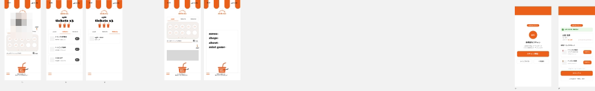

Tamary
来店時の小さな迷いを減らし、会員情報・特典・QRを短い操作で扱える店舗体験へ。
01 / Challenge
店頭で、説明なしでも使えること。
残高、特典、履歴、会員QRなど、用途の異なる情報を小さな画面で迷わせず扱う必要がありました。
02 / Decision
今使う情報を、最初の画面に集約。
日常の確認と店頭アクションを分け、重要な情報ほど短い移動で到達できる構造に整理しました。
03 / Design
静かな画面に、必要な反応だけ。
役割ごとの画面と表示状態を揃え、QRの表示・非表示を含む操作を動くモックで検証できる形にしました。

再生できない場合は、動画ファイルを直接開くことができます。
設計を、判断できる動きにする。
静止画のレビューだけでは見落としやすい「どこを押し、何が変わるか」を動画で確認できる状態にしました。
- 主要画面をまたぐ操作フローを実装
- 会員・スタッフ画面の情報設計を統一
- 会員QRの表示・非表示動作を検証
本案件は開発中です。公開用動画ではQR・会員IDなどの識別情報をマスクしています。外部サービス連携や本番公開を示すものではありません。
AN担当
要件整理、情報設計、Figma最終調整、実装方針・レビュー、操作モックの動作確認。AI／engineerによる実装を統括し、企画段階の要望を関係者が触れて判断できる状態へ変換しました。